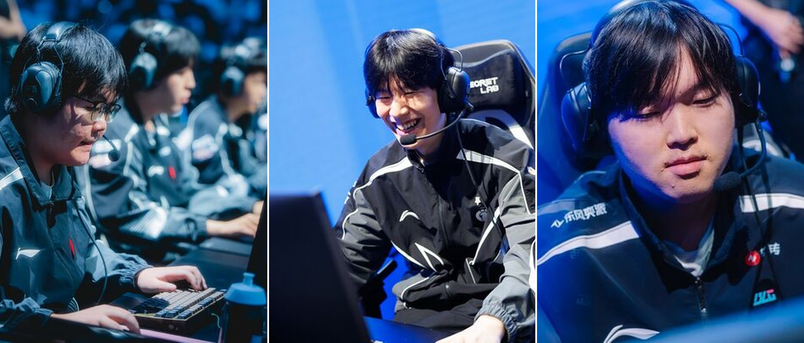
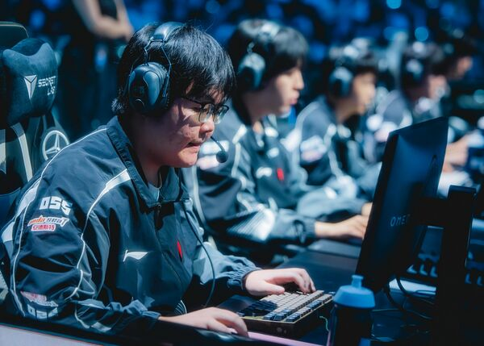

▲ 左起：369、TheShy、Bin。图源：Liquipedia
S16 · 上单之争
进步最大的上单，
不是 TheShy，也不是 Bin
369：从"救火队员"打到"999"
先说结论：这届 S16，进步最大的上单是 369。
TheShy 是"回来"，Bin 是"守住"，只有 369，是从一个几乎没人指望的位置，把自己打成了 TES 的命门。
三个人的起点完全不一样。所以"进步"这件事，不能只看现在谁最强——那样对 369 不公平，对 Bin 也不公平。
01
先看三条起跑线
Bin：BLG 的绝对核心。赛前论坛上最热的话题之一，就是"Bin 和 Zeus 谁才是世一上"。他是被拿来争第一的人。
TheShy：2018 年世界冠军，2023 年亚军。今年春天一度不在大名单里，6 月才回到 IG。26 岁，第四次打进世界赛淘汰赛。
369：25 岁，2025 年世界赛四强。据外媒报道，他是开赛前一周才被重新拉回首发，休息期间排位只打到翡翠段位。
一个在争"世一上"，一个是冠军回归，一个是临时救火。三条起跑线，根本不在一个平面上。
02
369：把一支队伍的命接住了

▲ 369（白家浩），TES 上路。图源：Liquipedia
TES 的瑞士轮开局并不好。第一轮输给 HLE，之后连赢 AL 和 G2，才爬到 2-1 组。
2-1 组的对手是 BLG——Bin 的队伍。第一局 TES 输了，再输一局就要掉进 2-2 的生死池。
然后 369 开始"摇 9"。
第二局他用剑魔在团战里一骑当千，TES 逆风翻盘扳回一城。决胜局锁下鳄鱼，对线顶住 Bin 的压力，23 分钟小龙团冲进阵中拿下双杀，一波奠定胜势。连续两局 MVP。
整轮系列赛，369 交出 8/4/14。对手是 Bin——被讨论"世一上"的那个人。
他不是把状态找回来，
是把一支队伍的命接住了。
TES 最后 3-1 出线。一个开赛前一周才归队的人，成了这轮系列赛最硬的那块板。
03
TheShy：这不是进步，是回来

▲ TheShy（姜承録），IG 上路。图源：Liquipedia
IG 这条线，故事性拉满。
首轮 0-1 输给 GEN，第二轮赢 TSW，第三轮 1-0 掀翻 HLE——成了 S16 第一支击败 LCK 的 LPL 队伍。第四轮 2-1 拿下 LYON，3-1 出线。
这是 IG 隔 2565 天重回世界赛淘汰赛，也是 TheShy 第四次打进 S 赛八强。
他自己的说法很松："一开始小目标是离开涅槃组，大目标是进世界赛，再往后压根没想过。"
数据上，他对 LYON 那轮是 4/4/10，参团率 41.2%；瑞士轮首日的分均伤害是 806。不炸裂，但够用。
TheShy 这一届真正变好的，是心态。一个拿过冠军、也跌到过谷底的人，现在能笑着说"没想过"，这比多打 200 点分均伤害更难。
04
Bin：他一直站在这，所以显得"没进步"

▲ Bin（陈泽彬），BLG 上路。图源：Liquipedia
单看数据，Bin 其实是三个人里最漂亮的。
瑞士轮前三场，他 KDA 9.00，场均 4.33 杀 / 1.00 死 / 4.67 助，参团率 60.0%，分均伤害 476。对位 Zeus 的那组对比里，他的 KDA 是 9.00，Zeus 是 3.00。
但 BLG 的路径不顺。2-1 组被 TES 让一追二，掉到 2-2，最后一天才拿下 HLE，拿到最后一张八强门票。
整届瑞士轮 8 场打完，Bin 的 KDA 是 4.46，参团率 51.8%，分均伤害 405。数字依然体面，只是没有前三场那么亮。
论坛上也有人说他"舒服流打法"——不抢资源、不硬拼单点，混住线等队友。这话对不对另说，但能看出来：大家对 Bin 的要求，从来不是"打好"，而是"打穿"。
所以 Bin 不是退步。他只是起点太高，进步这件事在他身上看不出斜率。
05
换个问法，答案就变了
如果你问的是"谁进步最大"，答案是 369。
如果你问的是"谁现在最强"，答案大概率还是 Bin。
如果你问的是"谁最让人感慨"，那只能是 TheShy。
三个问题，三个答案。把它们混在一起吵，永远吵不出结果。
| 369 | TheShy | Bin | |
|---|---|---|---|
| 起点 | 开赛前一周归队 | 春季休赛，6月回归 | 一直是争世一上的人 |
| 瑞士轮 | 3-1 | 3-1 | 3-2 |
| KDA | 2.50（前3场） 对BLG 8/4/14 |
对LYON 4/4/10 | 9.00（前3场） 4.46（全8场） |
| 分均伤害 | 557（前3场） | 806（首日） | 476（前3场） 405（全8场） |
| 一句话 | 斜率最陡 | 故事最足 | 高度最高 |
注：三人数据的统计口径与场次数不同（部分为瑞士轮前 3 场，部分为整个瑞士轮），仅作参考，不宜直接横向比较。
06
答案，11 月 4 日早上见分晓
八强抽签，最巧的一组是 TES 对 IG。
369 对 TheShy。一个刚刚打出生涯最硬系列赛的人，对上一个刚刚找回笑容的冠军上单。
北京时间 11 月 4 日早上 6 点，BO5。
至于 Bin，BLG 八强要碰 DK。他要面对的，是另一场硬仗。
进步最大的是 369，
但"最进步"这件事，得靠下一场证明。
评论区聊聊：
你觉得谁进步最大？
TES vs IG，你押谁？
点个关注。八强每打完一场，这里都会第一时间出复盘。
资料来源：Liquipedia（Worlds 2026 选手数据）、虎扑电竞、凤凰网、上游新闻、海峡网、LoL Esports。文中数据口径不同，已逐项标注。